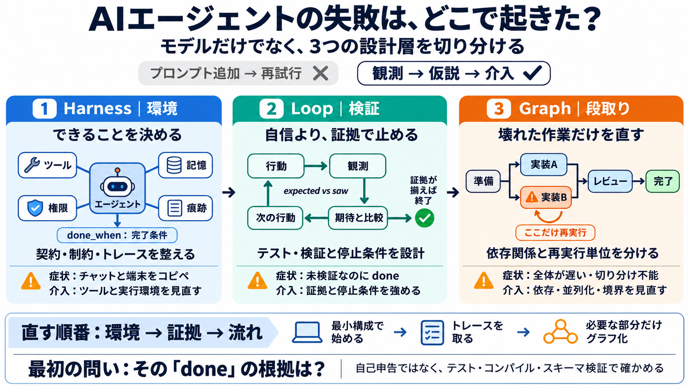

Graph, Harnesses and Loop Engineering Explained
- Treat harness changes like infrastructure changes. Giving the storage step write access to production or adding a new …

- Treat harness changes like infrastructure changes. Giving the storage step write access to production or adding a new …
Harness engineering builds the machinery around the model. Loop engineering designs the repeated work-and-feedback cy…
| Hierarchical | Nested supervisors (agents spawn subagents) | Claude Agent SDK (5 levels, 200-spawn ceiling), LangGraph…
## The bigger idea Graph engineering isn't a new idea. It's the latest name for a well established approach to building…
The example uses a five-agent insurance claims team: • Intake Agent • Damage Evidence Agent • Policy Agent • Risk Agent…